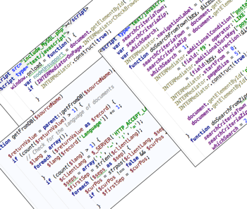

The fundamental communication between database and web page establishes just declarative way without programming.
- By adding the information about table and field to the text field in a web page, the data from database can be shown on it.
- Moreover if the data on the text field is updated by a user, it automatically updates to database.
- It realizes for the most of HTML form elements, and showing and setting to attributes can be to another kind of elements.
- If the data includes multiple records, it repeats on the web page. The pagination navigation is available just a declaring.
- The insert and delete buttons can be shown automatically.
- Images and other kinds of objects can corroborate with database.
- Authentication and authorization are available with a declarative way without programming.

Complex requirements and user interactions can be handled with programming.
- INTER-Mediator has the programming interface, and they realize to manipulate database on both server and client sides.
- On the server, you can modify the processing for each record or each field with programming, so it doesn't a simple 2-tier system and you can involve domain logic.
- Any JavaScript components can integrate. For example, HTML editor tinyMCE can be use with binding to database, and original file upload component is available.
- The browser detection is available and specify the supporting range. The message will be shown when the user uses unsupported browsers.
Demo of INTER-Mediator
Demo Video on another window. Click here.
Supported Servers and Browsers
PHP is required for the server-side program. On some previous versions, INTER-Mediator used PHP 5.3 functions. On the version 2.8, all 5.3-above functions were removed, so INTER-Mediator works on PHP 5.2. The client-side program is working with JavaScript. HTML5 savvy browsers can work fine.
- Web Servers: Apache HTTP Server 2.2/2.4 with PHP 5.2-5.6, IIS with PHP 5.2-5.6
- Databases: FileMaker Server 10 or later, MySQL(PDO Support version), PostgreSQL(PDO Support Version), SQLite3(PDO Support Version)
- Supported Browsers: Chrome, Safari, Firefox, Opera (Most of versions), Internet Explorer ver.9 or later